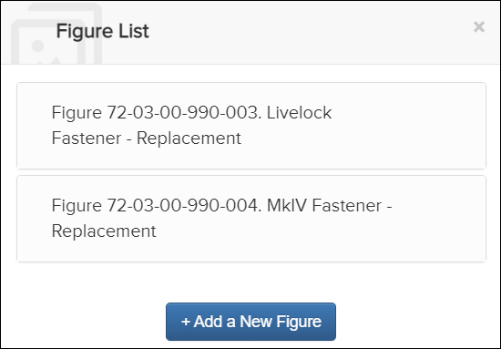
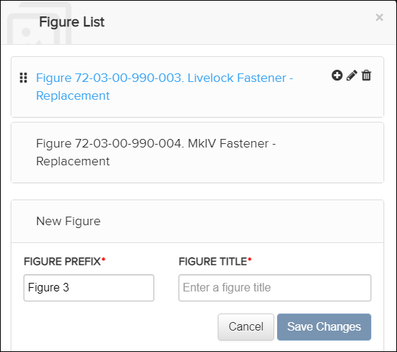
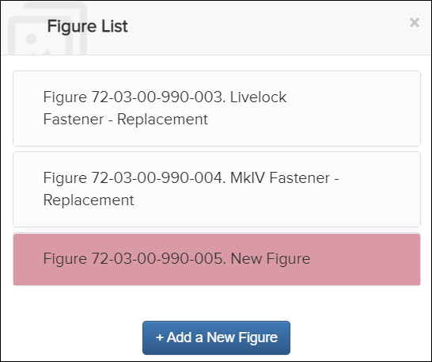
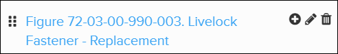
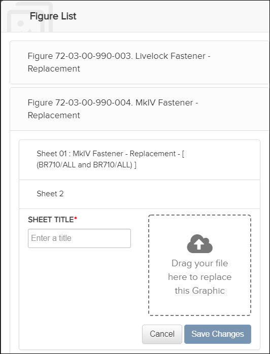
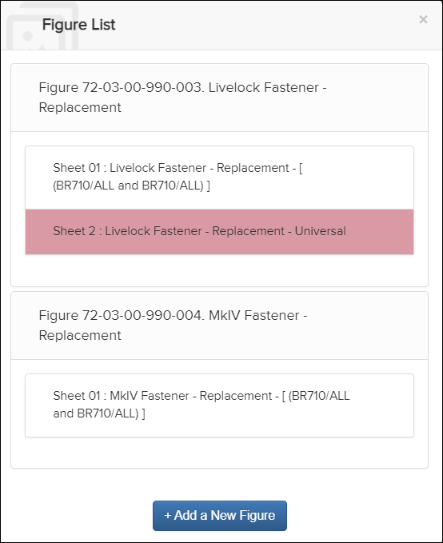

Not applicable for Pinpoint Standalone Light.
Users with the Can author content permissions can add new figures and sheets that are available for selection when authoring content. Adding figures or sheets is available from the Figure List dialog.
To open the Figure List dialog, do these steps:
- Enter authoring mode. Refer to Enter Authoring Mode.
- From the Content pane header, select the Figure List icon.The Figure List dialog appears. For example:

Figure List Dialog
Add a Figure
- In the Figure List dialog, click the button.The Figure List dialog expands to allow you to add a figure. For example:

Figure List Dialog - Add Figure
- Optional. Change the Figure Prefix value.
- In the Figure Title field, enter the title for the figure.
- Click the button.The figure is added to the Figure List and highlighted. For example:

Figure List Dialog - Figured Added
Add a Sheet Insert graphic link icon from the editing bar in authoring
mode. Refer to Insert Image.
Insert graphic link icon from the editing bar in authoring
mode. Refer to Insert Image.
- In the Figure List dialog, hover over the name of the
figure that you want to add a sheet to. These options appear:

- Click the
 Add Sheet icon. The Figure
List dialog expands. For example:
Add Sheet icon. The Figure
List dialog expands. For example:
Figure List Dialog - Add Sheet
- In the Sheet Title field, enter the title for the sheet.
- Click in the graphic box and select a file to add, or drag your file into the box.
- Click the button.The sheet is added to the Figure List and highlighted. For example:

Figure List Dialog - Sheet Added
Note: Adding a new sheet and uploading a new image will generate the thumbnail and display it in the Pinpoint content pane.